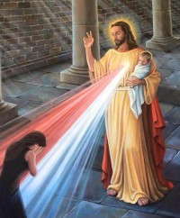

Experiența unui avort este, de cele mai multe ori, privită ca un act responsabil și necesar pentru o viață mai bună. Multe femei recurg la avort fără să presupună, măcar, ce se poate întâmpla după. Foarte puține persoane cunosc adevăratele consecințe ale avortului asupra organismului femeii și asupra psihicului ei.
Vezi articolul aici

Următoarea reculegere
În 14-16 Octombrie va avea loc următorul weekend Via Rahalei. Ne rugăm deja pentru participanții noștri și ne pregătim plini de speranță de o nouă reculegere de vindecare. Domnul nostru Isus are pregătite atâtea haruri ... trebuie doar să îndrăznim puțin și să ne apropiem de El.
Locația și alte detalii sunt confidențiale. Celor interesați să participe, ne puteți contacta pe adresa de facebook, sau pe adresa de mail: viarahelei@gmail.com